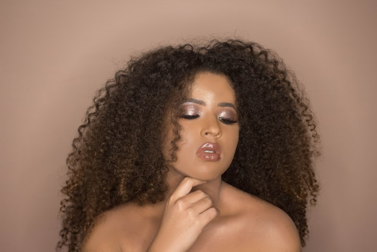
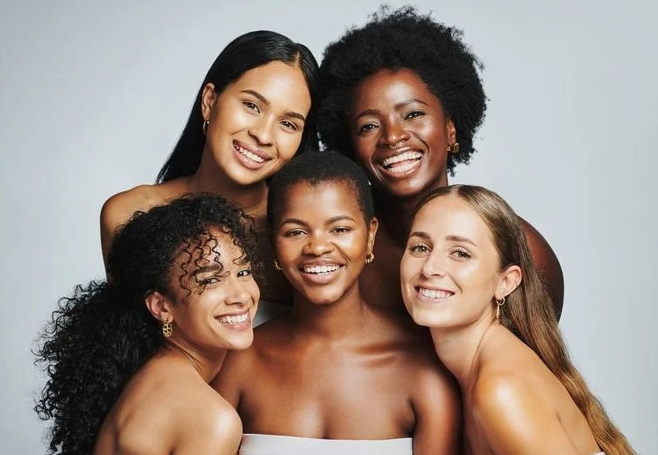

Transforme seus fios em esperança: doe cabelo, espalhe amor.
Conectando mulheres dispostas a doar cabelos a quem precisa, promovendo esperança e solidariedade em tratamentos capilares.
Saiba mais
Conectando mulheres dispostas a doar cabelos a quem precisa, promovendo esperança e solidariedade em tratamentos capilares.
Saiba mais
Em uma cidade em São Paulo, cinco amigas conhecidas num curso de TI — Kamilly Victoria, Leticia Ferreira, Kathleen Gomes, Eduarda Biajo, Olivia Jacob — compartilhavam uma paixão em comum: ajudar os outros. Ao longo dos anos, tornaram-se uma equipe unida, sempre procurando maneiras de fazer a diferença na comunidade. Elas sabiam que queriam criar algo significativo, mas ainda não tinham uma ideia concreta.
O tema surgiu quando Leticia, que tinha um cabelo muito longo e saudável, mencionou que estava pensando em cortá-lo para ajudar alguém. A ideia imediatamente acendeu uma faísca de inspiração entre as amigas. Elas descobriram que o cabelo poderia ser transformado em perucas para pessoas que estavam passando por tratamentos de câncer ou outras condições que causavam perda de cabelo.
Animadas com a descoberta, decidiram que queriam fundar uma empresa de doação de cabelo. No início, era apenas um sonho compartilhado entre amigas, mas a paixão delas e a determinação para ajudar os outros eram fortes. Elas deram início à "Conexão Capilar", uma organização dedicada a coletar e distribuir cabelo para a confecção de perucas.
Com aproximadamente 2 anos de mercado, o Conexão Capilar já conquistou clientes de inúmeros países com seus tratamentos cuidadosos e resultados indiscutíveis.
A terapia capilar é um conjunto de tratamentos que visa melhorar a saúde do cabelo e do couro cabeludo. Ela pode abordar problemas como queda de cabelo, caspa, oleosidade excessiva e ressecamento.
Doações de cabelo são atos de solidariedade em que pessoas cortam suas madeixas para enviar a instituições que produzem perucas para pacientes em tratamento de câncer ou com outras condições que causam queda de cabelo.
A confecção de perucas é um processo que envolve a criação de peças de cabelo artificial ou natural, destinadas a serem usadas por pessoas que enfrentam perda de cabelo devido a condições como câncer, alopecia ou outros problemas de saúde.
“ Antes de conhecer o projeto Conexão Capilar, enfrentei um problema capilar irreversível que me fez perder o ânimo para sair de casa. Foi através de um anúncio que decidi me inscrever, e em apenas dois dias entraram em contato comigo. Com a aquisição do meu novo cabelo, agora posso me olhar no espelho e sorrir novamente, redescobrindo minha autoestima. 💖
Luana Bispo
“ Eu me chamo Eloah e sou uma das donatárias dos cabelos, e a palavra que mais descreve esse projeto é empatia, pois ajuda mulheres todos os dias, como eu fui. Obrigada a toda a equipe por proporcionar felicidade e autoestima para nós mulheres 🤞🌹
Eloah Fabris
“ Há muito tempo não me sentia bonita. Por causa do câncer de mama, perdi todo o meu cabelo. Porém, depois de adquirir os cabelos da Conexão Capilar, eu pude ter minha autoestima renovada!!
Gabriella Souza
“ Sou grata por esse projeto, hoje vivo a vida mais leve e me sinto melhor comigo mesma. Eu me reencontrei, obrigada conexão capilar 👏🥰
Laura Ferreira
Entre em contato com a Conexão Capilar, queremos tirar suas dúvidas, devolver sua autoestima e vos libertar!
Entrar em contato